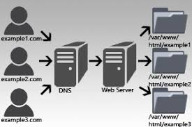
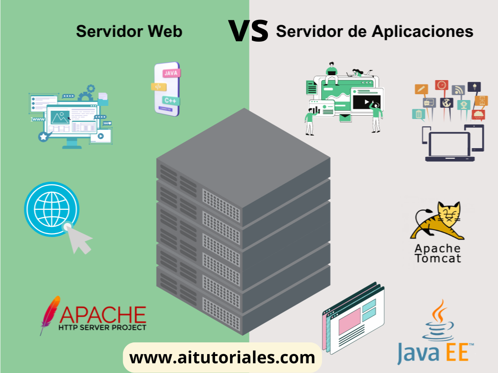
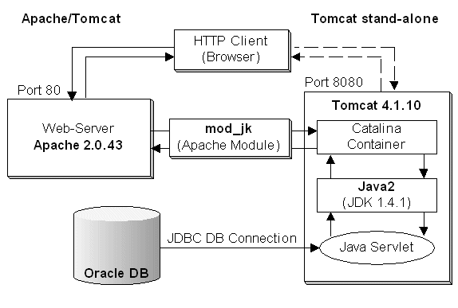
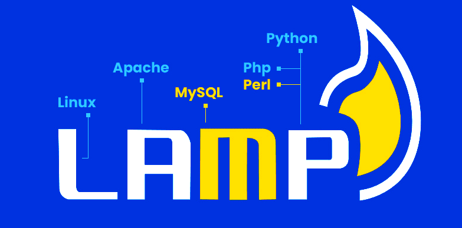

Sitios virtuales (VirtualHost)
Apache permite alojar varios sitios en un mismo servidor mediante VirtualHosts.
- Archivos en
/etc/apache2/sites-available/ - Habilitar con
a2ensite

#Ejemplo de configuración de VirtualHost:
<VirtualHost *:80>
ServerName empresa.local
DocumentRoot /var/www/empresa
</VirtualHost>
Archivo hosts para dominios locales
El archivo hosts permite simular dominios sin usar un servidor DNS. Es muy útil para el desarrollo y pruebas, vinculando direcciones IP con nombres de dominio.
- Windows:
C:\Windows\System32\drivers\etc\hosts - Linux:
/etc/hosts
192.168.1.10 empresa.local
192.168.1.10 intranet.localConfigurar HTTPS en Apache
En desarrollo puedes usar un certificado autofirmado generado con OpenSSL. En ocasiones, para producción se requiere un certificado emitido por una Autoridad de Certificación (CA), pero en entornos de prueba puedes usar uno autofirmado.
- Habilitar SSL:
a2enmod ssl - VirtualHost en puerto 443
# Crear certificado autofirmado
sudo openssl req -x509 -nodes -days 365 \
-newkey rsa:2048 -keyout empresa.key -out empresa.crtDiagnóstico de Apache
Tras cada cambio, valida la configuración y revisa los logs.
apachectl configtest- Logs:
/var/log/apache2/error.log
¿Qué es un servidor de aplicaciones?
Un servidor de aplicaciones es un componente de software que proporciona el entorno necesario para ejecutar aplicaciones web y empresariales, gestionando la lógica de negocio, la conexión a bases de datos y la generación dinámica de contenido (como HTML). A diferencia de un servidor web estático, procesa peticiones complejas y ejecuta código de backend.
- Tomcat, WildFly, Payara...
- Gestionan sesiones, seguridad, recursos.

Tomcat
Tomcat es un servidor de aplicaciones open source desarrollado por Apache. Se utiliza principalmente para ejecutar aplicaciones Java (WAR).
Un caso de uso sería en entornos de desarrollo o prueba, para que los desarrolladores puedan probar sus aplicaciones Java sin necesidad de un entorno de producción completo.
Tomcat se instala como servicio y ejecuta aplicaciones Java (WAR):
- Carpeta:
/opt/tomcat/ - Aplicaciones:
webapps/
Integración Apache + Tomcat
Apache actúa como frontal y redirige peticiones hacia Tomcat mediante proxy.
- Peticiones HTTP desde cliente
- Apache recibe la petición y decide si es estática o dinámica
- Si es dinámica, Apache la redirige a Tomcat
- Tomcat procesa la lógica de negocio y devuelve la respuesta a Apache
- Apache envía la respuesta al cliente

Pila LAMP
Conjunto Linux + Apache + MySQL + PHP para aplicaciones web dinámicas. Es muy utilizado en entornos de desarrollo y producción.
- Linux proporciona el sistema operativo
- Apache gestiona las peticiones HTTP
- PHP procesa lógica de servidor
- MySQL almacena datos
